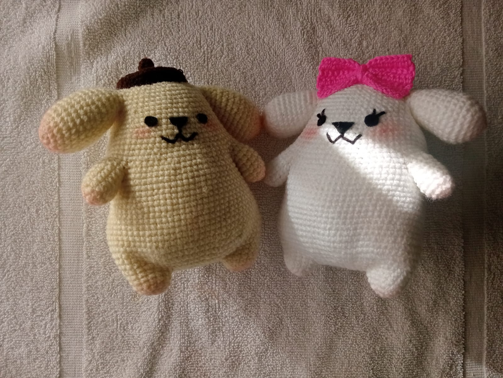
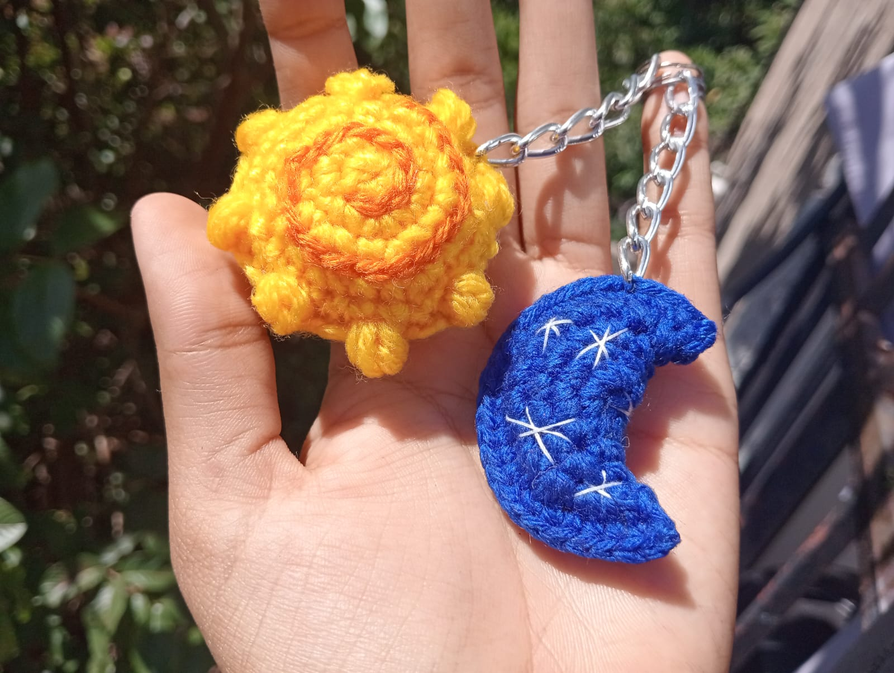
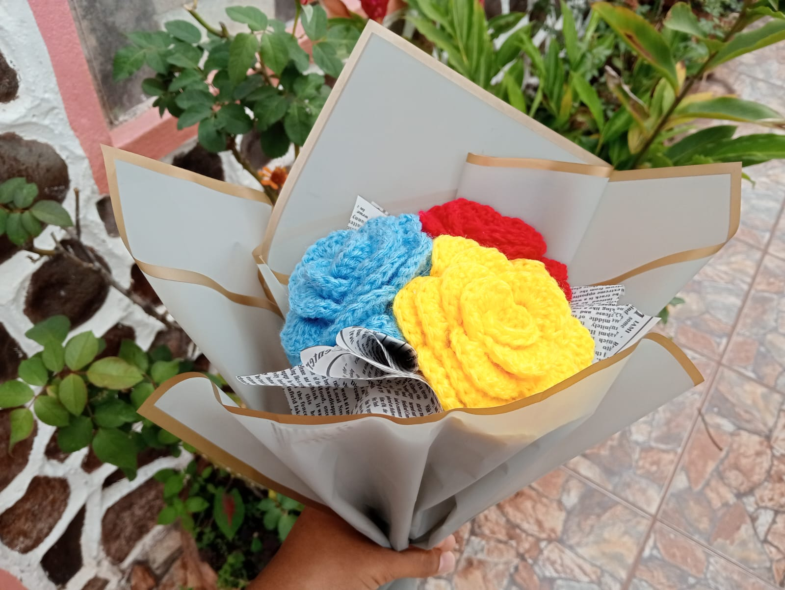
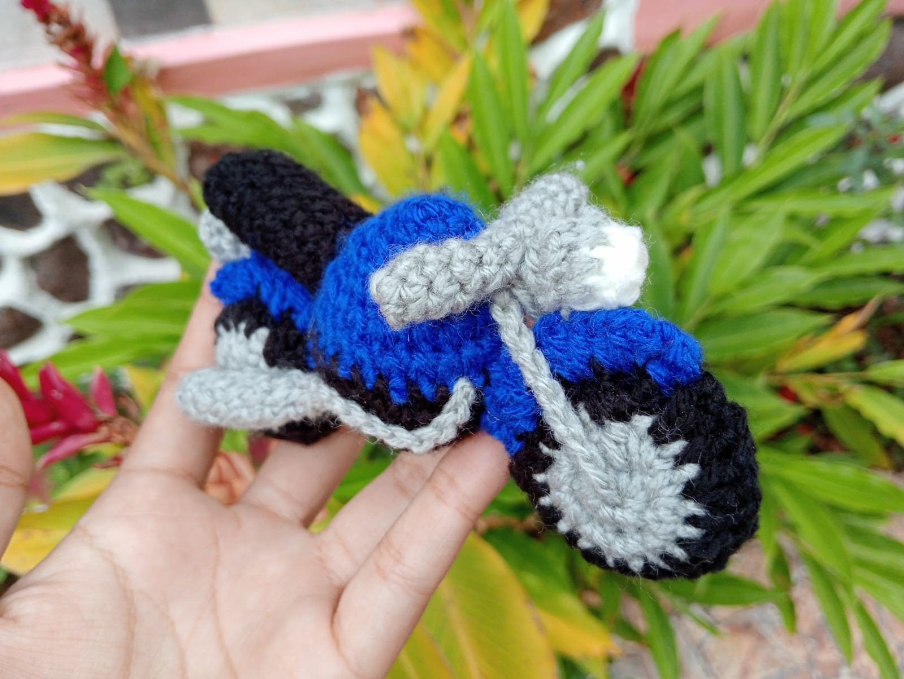
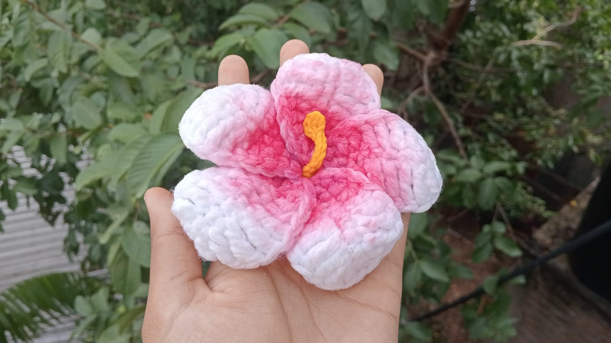
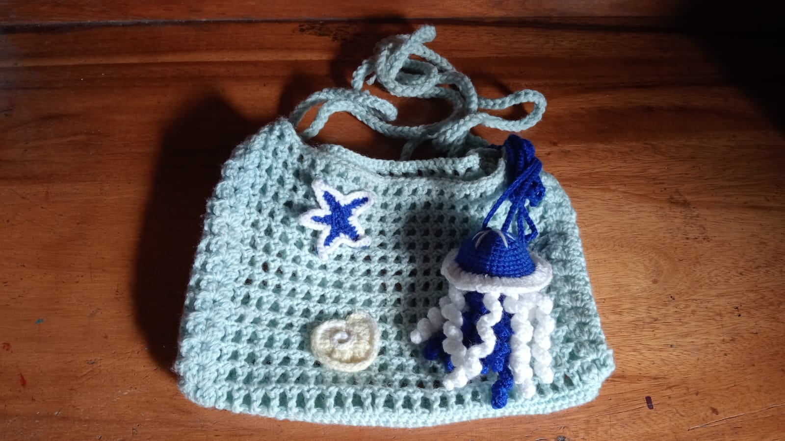
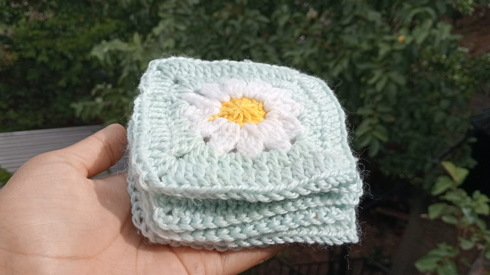

Un pequeño espacio creado con mucho amor, donde encontrarás detalles tejidos a mano, accesorios, bolsos, tapetes y muchas cositas bonitas hechas para darle un toque especial a cada momento. Cada pieza es única y está hecha con dedicación, creatividad y mucho cariño 🌷🧶
Conoce la colección de productos hechos a mano, creados con mucho amor, dedicación y atención a cada detalle

Amigurumis tejidos a mano con diferentes diseños y colores. Ideales para regalar, coleccionar o decorar 🧸✨
Ver más

Llaveros tejidos a mano con diseños únicos y coloridos perfectos para llevar tus creaciones favoritas contigo ⭐💜
Ver más

Flores tejidas a mano que nunca se marchitan, es un detalle bonito y duradero perfecto para regalar o decorar 🌷💜
Ver más

Descubre los detalles tejidos perfectos para darle un toque acogedor, único y original a tus espacios ✨🧶
Ver más

Accesorios tejidos con diseños creativos, perfectos para complementar tu estilo con un toque especial 🧶✨
Ver más

Bolsos tejidos con diseños únicos y detalles especiales perfectos para llevar tus cosas con estilo y darle un toque lindo a cualquier look 💜🧶
Ver más

Tapetes tejidos increibles para darle un toque acogedor, bonito y especial a cualquier espacio con diseños únicos hechos con mucho cariño y dedicación 🧶💜
Ver másPunto Popcorn comenzo como mi manera de compartir algo que disfruto hacer, expresarme y convertir mi creatividad en pequeñas piezas que otras personas tambien pueden disfrutar. Lo que comenzó con el gusto por aprender un nuevo hobby fue creciendo poco a poco hasta convertirse en este pequeño emprendimiento. Detrás de cada producto hay tiempo, paciencia, creatividad y muchas ganas de seguir aprendiendo. Elegí crear este espacio porque quería tener un lugar donde pudiera mostrar mis trabajos y compartir un poquito de lo que hago. Espero que cada pieza de Punto Popcorn pueda transmitir ese cariño y dedicación con los que fue creada 💜
Para mí crear una pieza de crochet es un proceso que comienza mucho antes de tomar el hilo y la aguja. Primero busco patrones o tutoriales que me puedan servir y si no hay ninguno debo crear me mio desde cero, tambien tengo que buscar los colores necesasrios para el proyecto y qué detalles puedo agregar para que el resultado tenga un toque diferente. A veces comienzo con una idea específica y mientras voy tejiendo termino cambiando algunos detalles o agregando cosas nuevas. Me gusta tomarme mi tiempo en cada parte del proceso, porque siento que la paciencia es la parte mas importante del crochet. Ver cómo poco a poco unas simples lanas se convierten en algo que puedo utilizar, regalar o compartir con otras personas y es una de las cosas que más disfruto de todo esto
El crochet se ha convertido en una forma de expresar mi creatividad y hacer realidad ideas que antes solo existían en mi imaginación. Después de estos 3 años aprendiendo y practicando, se ha convertido en mi hobbt favorito y que me permite desconectarme un poco de otras cosas y relajarme. También me ha enseñado a tener paciencia, porque no todo sale bien a la primera y muchas veces me toca deshacer y volver a empezar las piezas. Cada pieza terminada me recuerda todo lo que he aprendido y lo mucho que puedo mejorar con práctica y dedicación
Llevo aproximadamente 3 años aprendiendo crochet y durante este tiempo he aprendido diferentes puntos, técnicas y formas de trabajar con distintos tipos de hilo. Al principio algunas cosas podían parecer complicadas, pero con práctica fui aprendiendo poco a poco y adquiriendo más confianza. Cada proyecto me ha dejado algo nuevo, incluso aquellos que no quedaron exactamente como esperaba. Todavía hay muchas técnicas y diseños que quiero aprender, por lo que considero que mi proceso de aprendizaje continúa y mejoro con cada nueva pieza que hago. Para mí, mejorar no significa que todo tenga que salir perfecto, sino seguir intentando y disfrutar el proceso
Estos son algunos materiales y herramientas necesarios para realizar productos de crochet.
Tu opinión es muy importante para mí 💜